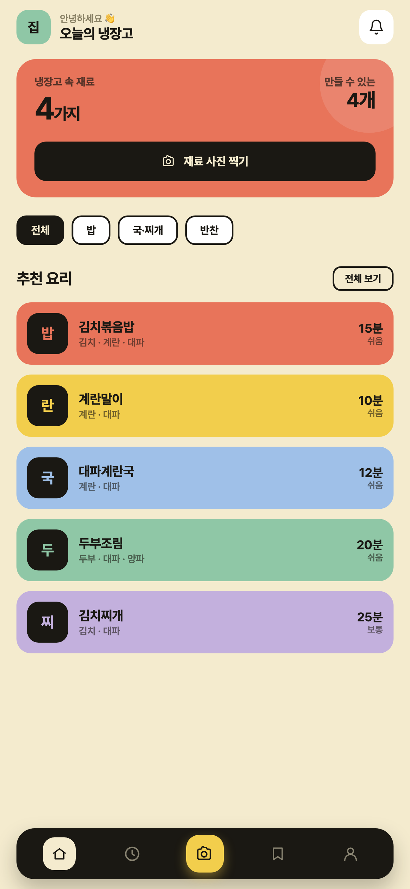
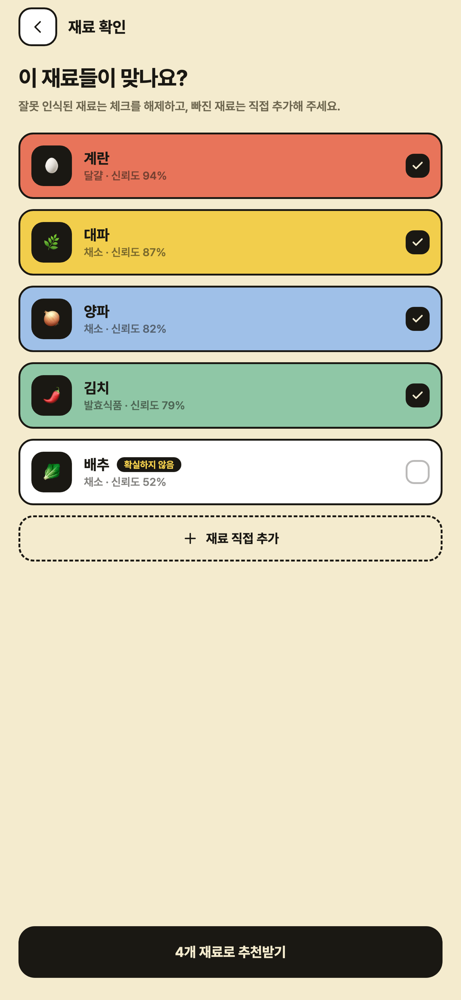
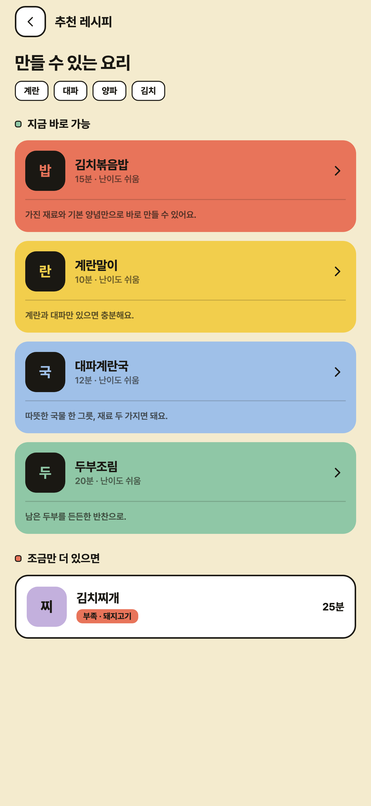
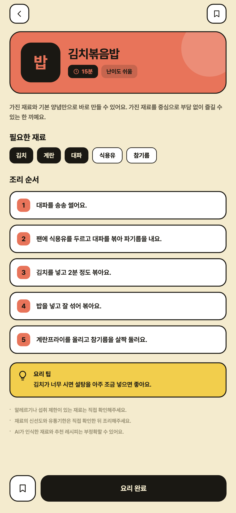
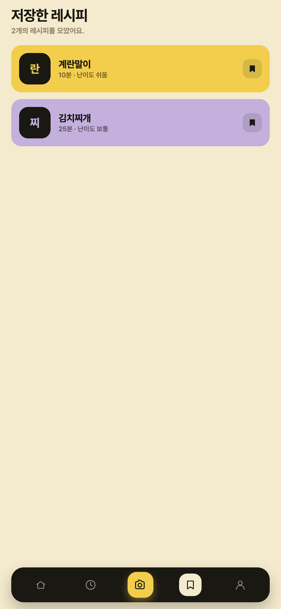

냉장고에 있는 걸로, 오늘 뭐 해먹지? 가진 재료를 사진 한 장으로 찍으면 AI가 인식해 지금 만들 수 있는 요리를 추천해드려요.





가진 재료를 한곳에 모아 찍기만 하세요. AI가 식재료를 알아보고 목록으로 정리해줘요.
가진 재료 기준으로 '바로 만들 수 있어요 / 이것만 있으면 가능해요'로 나눠 집밥 위주로 추천해요.
재고관리 앱이 아니에요. 직접 입력도, 긴 검색도 없이 '뭐 해먹지'를 10초 안에 끝내요.
마음에 든 레시피는 저장하고, 최근 찍은 재료와 추천 기록을 언제든 다시 볼 수 있어요.